Seat cover and vehicle references
Each cover is shown beside its vehicle. The cover photos are third-party references. Both Chetak listings use Bajaj’s shared seat protector photo. Photo sources
Yamaha Fascino 125
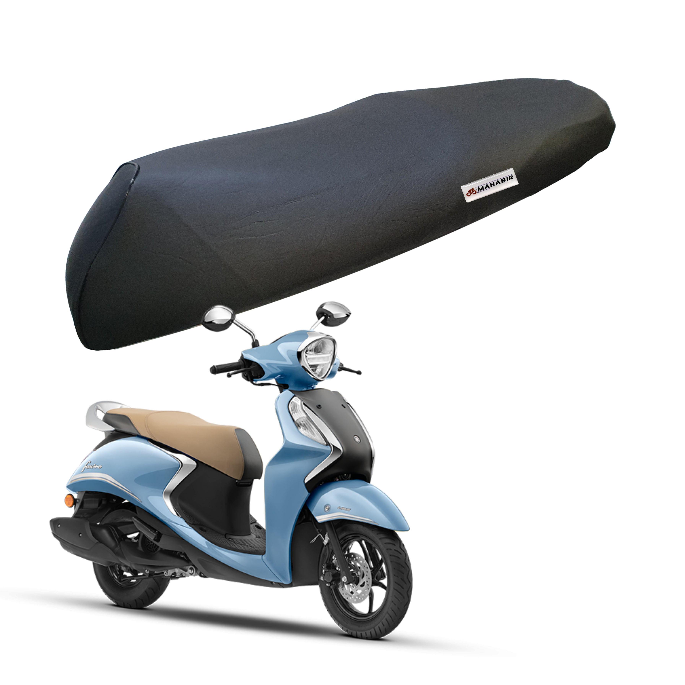
Seat cover reference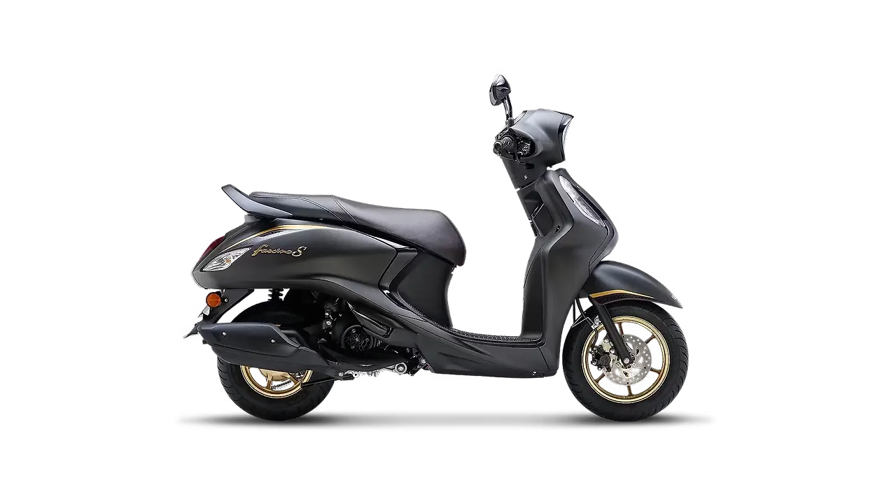
Full vehicleHonda Activa 125
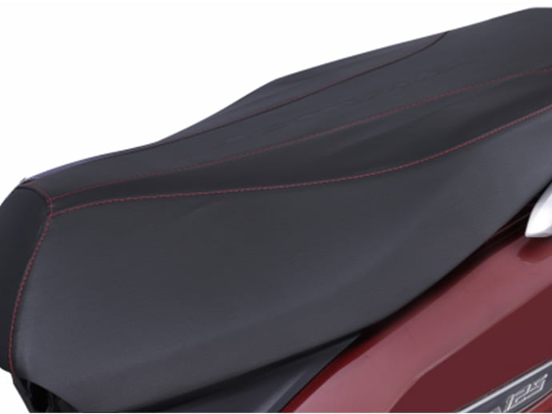
Seat cover reference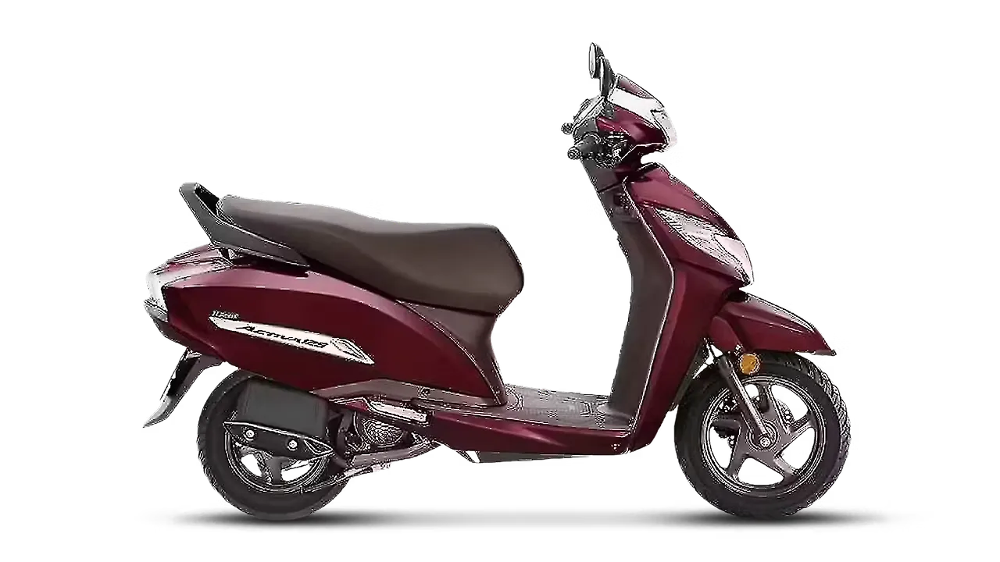
Full vehicleHonda Activa 6G (110)
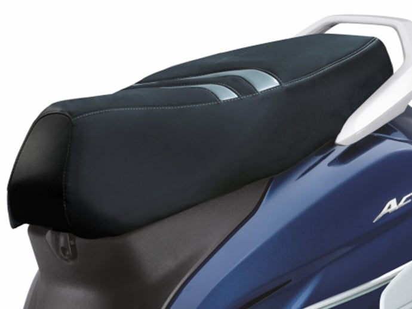
Seat cover reference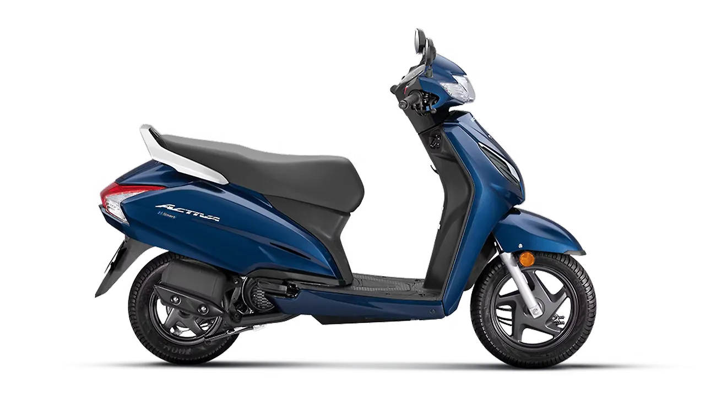
Full vehicleBajaj Chetak C2501
 Seat cover reference
Seat cover reference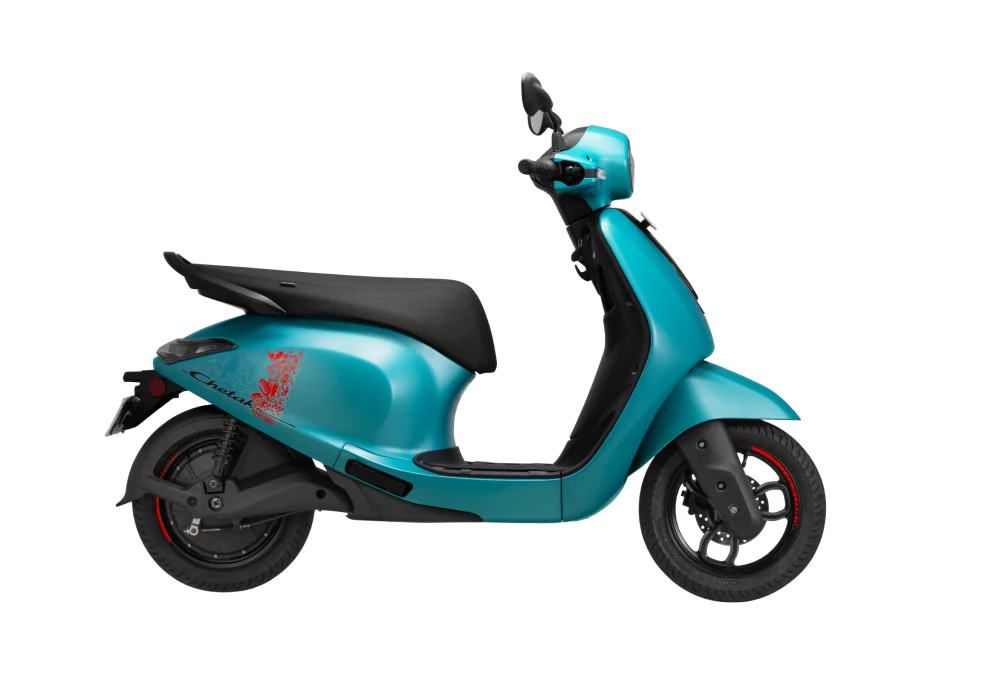
Full vehicleBajaj Chetak (model family)
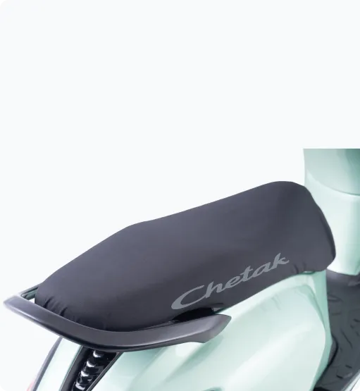
Seat cover reference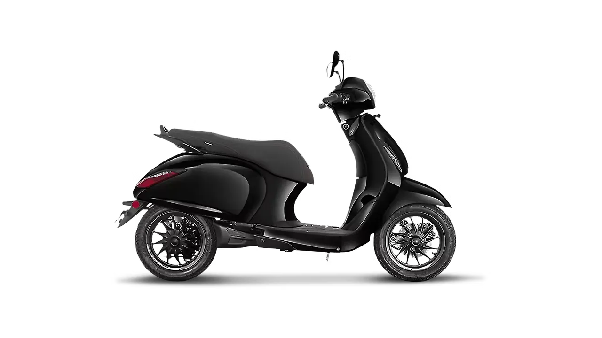
Full vehicleHonda SP 125
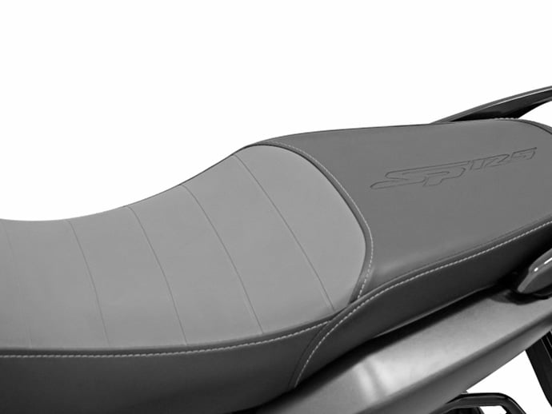
Seat cover reference Full vehicle
Full vehicleHonda Shine 125
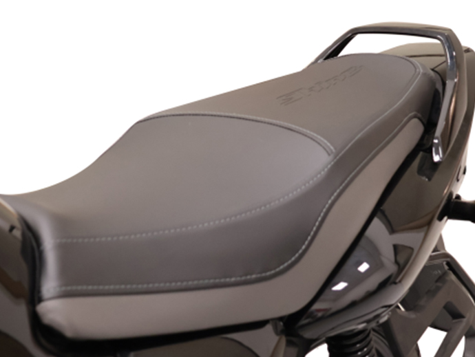
Seat cover reference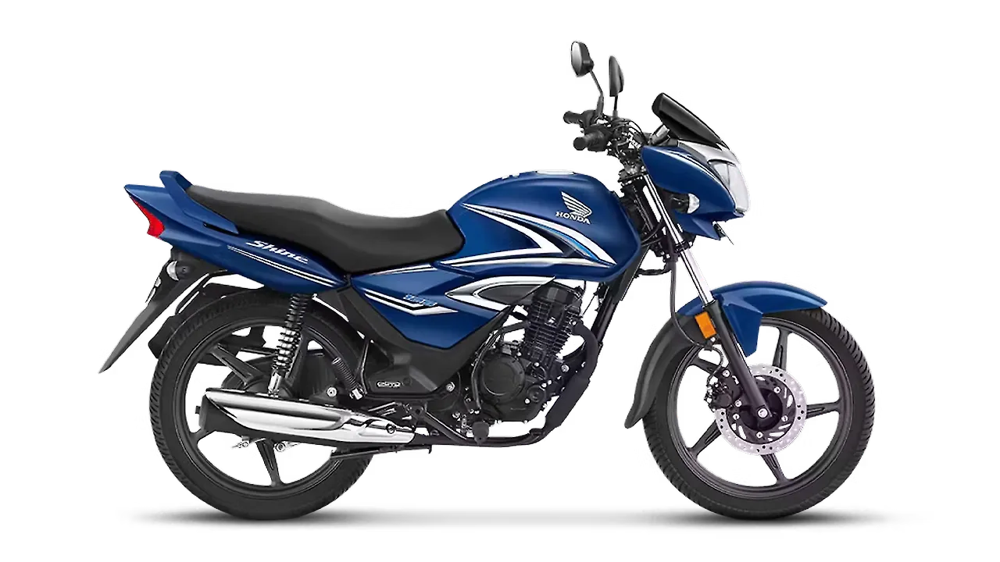
Full vehicleHonda CB Shine
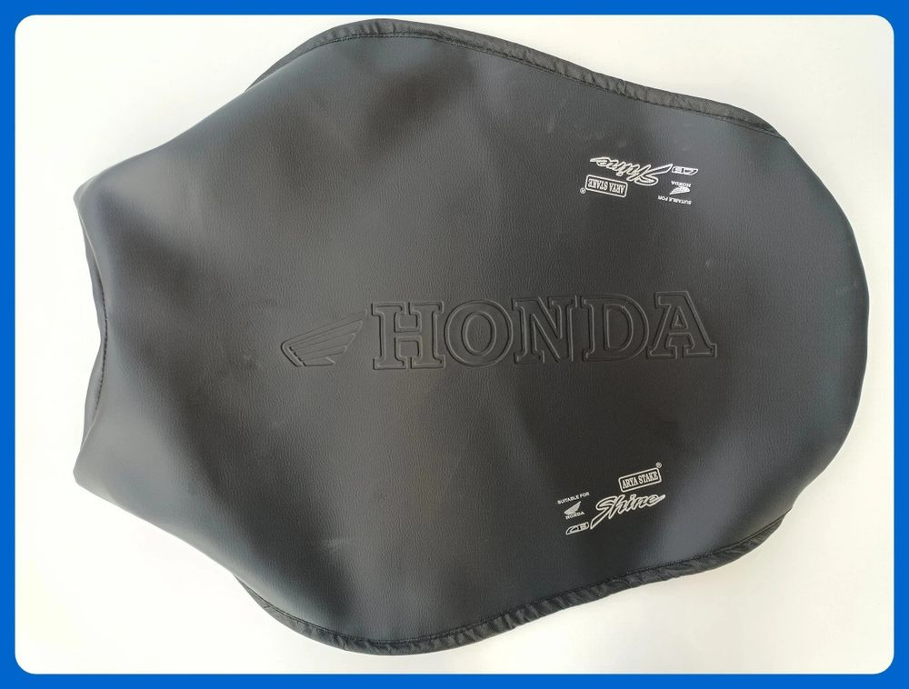
Seat cover reference Full vehicle
Full vehicleHonda Shine 100
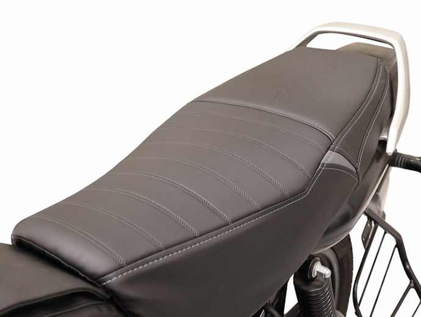
Seat cover reference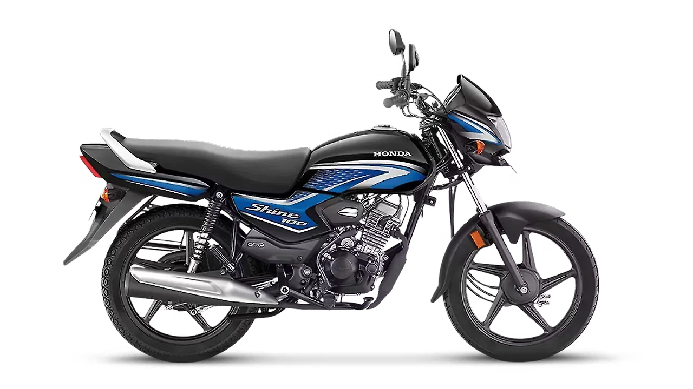
Full vehicle